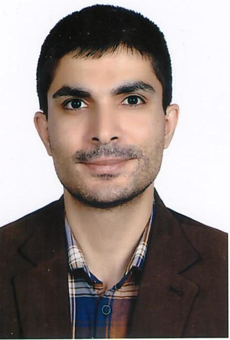

Assistant Professor, Department of Civil Engineering and Transportation, University of Isfahan, Iran
Address: Room 20, Civil engineering building 1, Hezarjarid st, Isfahan, Isfahan, Iran Phone: 031-37935278
